Cravité
Cravité est une planète rocheuse recouverte d'une fine couche de sol et de nombreuses structures naturelles et artificielles. Sa surface est principalement composée de falaises, de montagnes et de grandes étendues rocheuses.
La particularité principale de Cravité réside dans sa structure interne. La planète est creuse et abrite un immense espace central rempli de fragments de roche en suspension. Ces morceaux de terrain gravitent autour du noyau de la planète, formant un paysage particulièrement instable.
La surface de Cravité est constamment soumise à des effondrements. Des morceaux de roche peuvent se détacher du sol et tomber vers l'intérieur de la planète, emportant parfois avec eux certaines structures.
À l'intérieur se trouve un vaste espace entouré de parois rocheuses. On peut y observer de nombreux fragments de terrain flottant dans le vide, ainsi qu'une importante quantité de matière rocheuse qui continue de se détacher de la surface.
La planète est également entourée d'une atmosphère sombre et d'une multitude de débris en orbite. Son paysage donne ainsi l'impression d'un monde progressivement désagrégé, dont la surface se fragilise continuellement.
Cravité est donc une planète où le terrain lui-même n'est jamais complètement stable. Ses falaises s'effondrent, ses rochers se détachent et une partie de sa surface finit continuellement par rejoindre son immense intérieur.